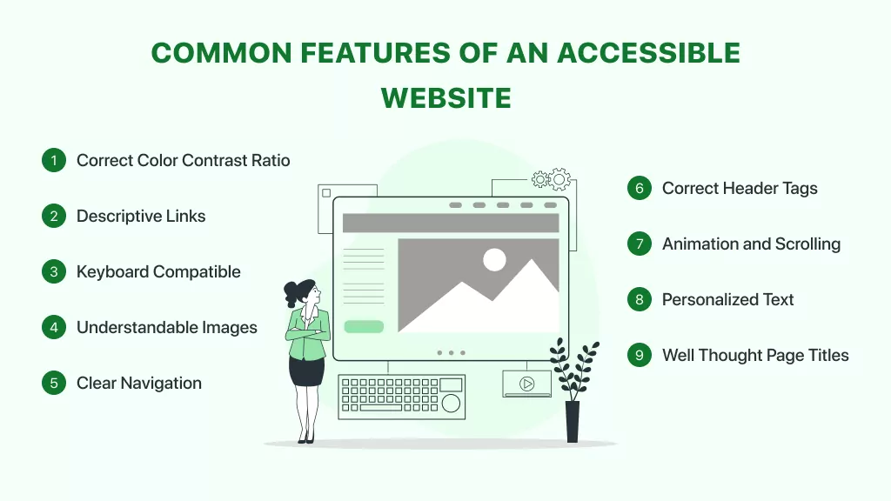

Image

Image on article by C. Visser, R. Shrivastava, P. Velhinho
Youtube Video
Video by GoDaddy Pro on YouTube
This video introduces the key elements of an accessible website and explains why accessibility is essential in modern web design. It highlights how thoughtful design choices such as clear navigation, readable text, proper contrast, and support for assistive technologies. It also help ensure that all users, including those with disabilities, can easily access and interact with online content.
Article
This article from Forbes explains why web accessibility is becoming increasingly important in today's digital world. It emphasizes that websites should be designed so that everyone including those individuals with disabilities can access information, services, and online tools equally. With millions of users affected by visual, physical, or cognitive impairments, accessibility ensures inclusivity and equal opportunity online for everyone.
Accessibility in Websites
Website accessibility means making the internet usable for everyone, including those with disabilities. It helps ensure equal access to information, improves user experience, and creates more inclusive digital spaces.